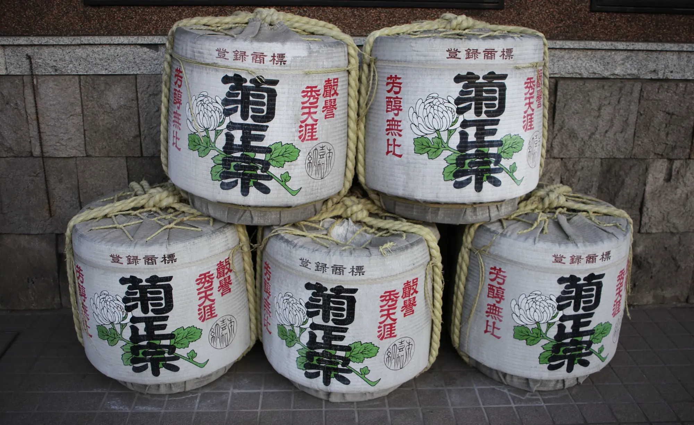
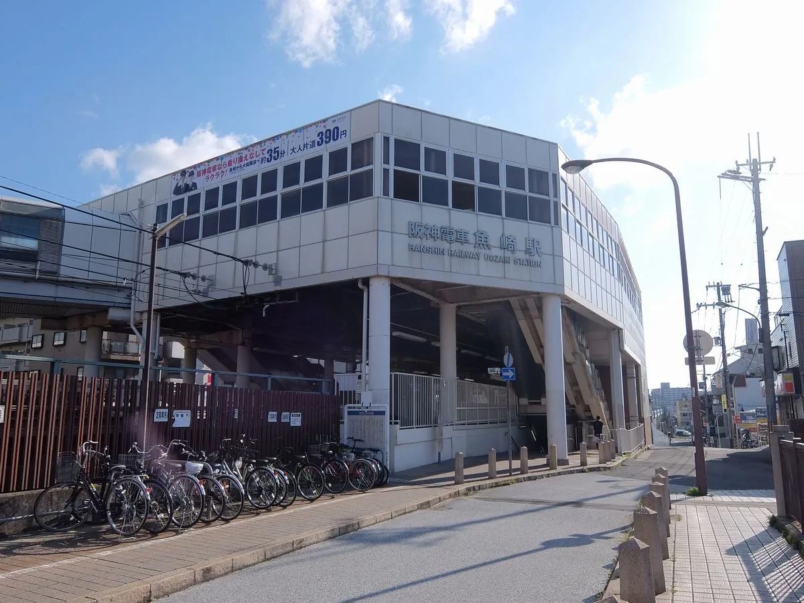
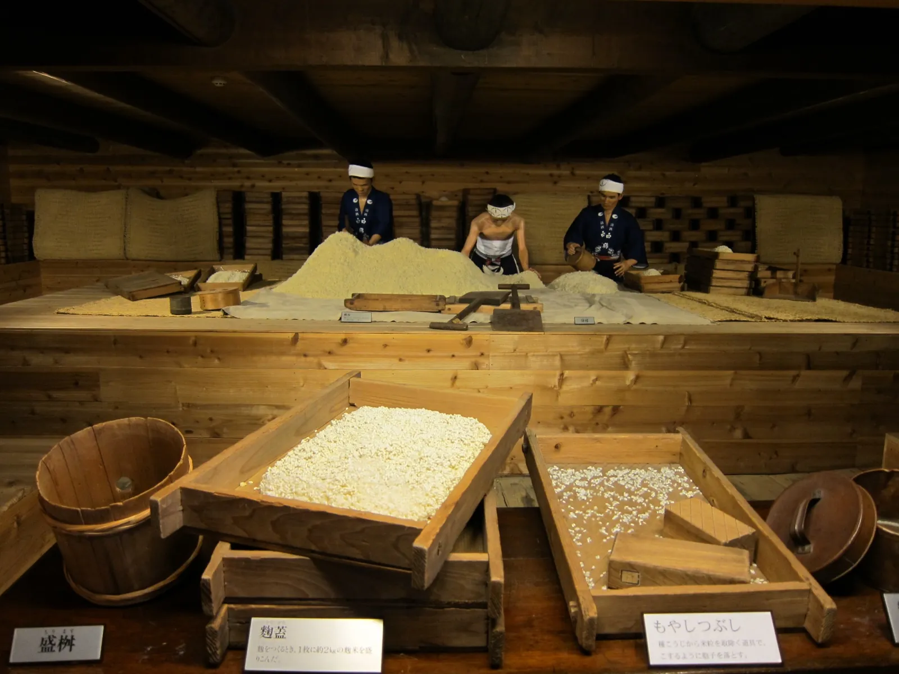
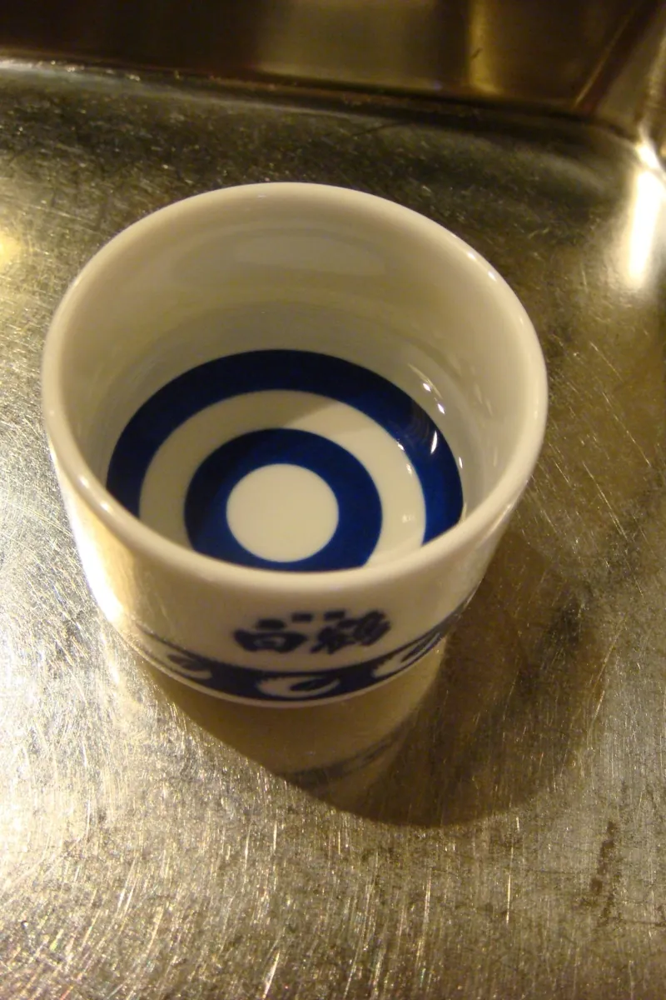

12:30
阪神「魚崎駅」
改札を出たところに集合です。10人そろい次第、浜福鶴へ向かって歩き出します。

2026年9月13日（日）のしおり
予約は10人分、4か所ぜんぶ取れました。あとは9月13日（日）の12:30に、阪神「魚崎駅」の改札を出たところへ来てください。
写真は菊正宗の菰樽です。当日ならんでいるとは限りません。
お昼はそれぞれ済ませてから来てね。13:00の浜福鶴でいきなり試飲がはじまるので、何か食べておいたほうが体がラクです。
10人そろったら浜福鶴まで歩きます。徒歩11分なので12:41ごろに着いて、予約の13:00まで19分くらい余ります。少し遅れる人がいても、この19分で吸収できます。

魚崎から御影へ、西に向かって歩くだけの一本道です。全部で約3.2km。あいだに4回止まるので、たぶん思っているより歩けます。
ひとつだけ、14:50に気をつけてください。菊正宗の案内が目いっぱい50分かかった日は、白鶴の15:00まで移動の10分ぴったりで、余白がまったくありません。
菊正宗から白鶴までは徒歩10分。案内が14:40に終わればおみやげを見る時間もありますが、14:50までかかった日は、そのまま出発してください。
12:30
改札を出たところに集合です。10人そろい次第、浜福鶴へ向かって歩き出します。
浜福鶴までは徒歩11分、約800mです。
13:00
予約したのは無料試飲のコースで、10分ほどで終わります。案内は付かないので、そのあとは売店をのぞきながら、13:40から13:45のあいだに次へ出発しましょう。

菊正宗までは徒歩7分、約500mです。
14:00
4か所のなかで案内が付くのはここだけです。無料試飲まで含めて40分から50分あるので、今日いちばんちゃんと酒蔵を見られる時間になると思います。
終わったら14:50。ここから白鶴までは徒歩10分なので、寄り道はまた今度にしてください。

白鶴までは徒歩10分、約700mです。
15:00
案内なしの自由見学で、だいたい45分です。昔の酒造りの工程を立体的に見せる展示になっていて、写真みたいな木の道具や人形が並んでいます。撮りたい人はここが本番かも。15:45ごろに出ます。


灘五郷酒所までは徒歩6分、約450mです。
16:00
16:00に全員いっせいスタートで、そこから90分あります。ここが今日の締めです。
完全予約制のお店なので、開始から30分を過ぎるとキャンセル扱いになることがあります。白鶴を15:45に出れば間に合う計算です。

御影駅までは徒歩11分、約700mです。
17:45
ごろ17:30に酒所を出て、御影駅までは徒歩11分。17:41ごろ着く計算なので、解散は17:45ごろになります。そのあとどうするかは、歩きながら決めましょう。
灘五郷酒造組合の公式デジタルマップに、今回の6か所を朱い線で重ねました。右の魚崎郷から左の御影郷へ、ずっと西に進みます。画像を押すと、今いる場所が出る本物の地図が開きます。
 1
2
3
4
5
6
朱い線が今回の道です
1
2
3
4
5
6
朱い線が今回の道です
車と自転車で来るのはやめてください。試飲の合間に水をはさんでおくと、最後の90分がずっとラクになります。しんどくなったら遠慮なく言ってね。
20歳未満の人と、妊娠中・授乳中の人、それから運転する予定のある人は試飲できません。今回は10人とも20歳以上なので、身分証だけは忘れずに持ってきてください。
4か所で何杯か飲むので、帰るころにはたぶん全部わからなくなります。旅先で撮った写真と同じで、その場で残した一行だけがあとから効きます。書けるように行を3本引いておいたので、印刷して持ってきてもいいし、スクショでも大丈夫です。
